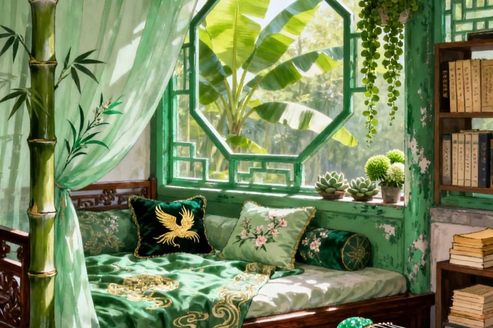

Welcome to The Garden. I’m so excited to say my first website! After a 10 year journey I finally wrapped up my degree last week. While taking my last class, Data analytics that I was oh so hesitant to take I discovered a love for coding. At first, I wanted to become a data analysts but Im a creative at heart. Why be caged to something that suppresses such a good quality?
And that’s where web development came in, a world that collides my creativity and my love for coding! The idea of building a website has been an idea in the back of my mind and brought up in many conversations for years. But the time was never right. Ive played around and designed a few on Canva but nothing anywhere near this extreme.With this website being built from the ground up, it represents a journey of self discovery and becoming a front end web developer. While creating this puzzle there will often be puzzle pieces that don’t fit or I can’t seem to find. But through hard work, dedication and the world of tech at hand the only outcome possible is a beautiful website. This journey begins on may 7th, 2026.